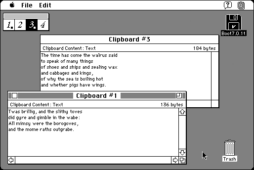

Download
clipmaster.zip (41K) Clipboard Master 2.0 repackaged into a zipped hfs disk image and checksum file. The disk image can be mounted with Mini vMac.
clipmaster.hqx (53K) Clipboard Master 2.0 in the original format.
copyright: In Phase Consulting
mod date: Nov 3, 1994
license: free for non-commercial use
last known url
(gone)
Manages multiple clipboards.

If you find these downloads useful, please consider helping the Gryphel Project, which hosts them.
Here are the md5 checksums for the downloads, signed with Gryphel Key 5:
--------- GRY SIGNED TEXT --------- 5c5af6159c1719501896ba1540a60c79 clipmaster.zip 90a17828ac6399bb097a9f6ad9aa9a2f clipmaster.hqx ------- BEGIN GRY SIGNATURE ------- Gry/4Xa8CFcUzxdN/HE7XTwZ3CTW77IsWqFtNQA/GPxmY2Bqih0/JwJ8ucPOy2Uk 4z5GN4yap5Iaz0E/rpsDJyzIPhOtWSe8KHo0o21zChIGueaX9vnHk/uRoyrz+CXp pjby+FNmeyqYPIHQsHSdd17PAbBDY99dJPBtz3JobzlvUcRD2pSVrGEDDsvFeg8e -------- END GRY SIGNATURE --------